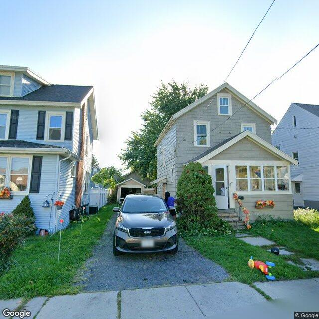

Property entry
329 Malverne Dr
Published 2026-09-22T18:02:59+00:00
Parcel key: 004-16-070

City records
Matches use parcel IDs or normalized property addresses. Nearby properties are not treated as matches. Records may include historical or closed cases; check each record's status and dates. Publication dates are not source-data dates.
Vacant properties 0
No matches stored for this feed. The feed or address matching may be incomplete; this is not confirmation that no records exist.
Records refreshed 2026-10-27.
Rental registry 1
- Latitude
- 43.08137378
- Longitude
- -76.14628957
- NeedsRR
- Yes
- ObjectId
- 2067
- PropertyAddress
- 329 Malverne Dr
- RR_contact_name
- Kathleen Hanley
Records refreshed 2026-10-27.
Code violations 21
- Latitude
- 43.08137378
- Longitude
- -76.14628957
- Neighborhood
- Court-Woodlawn
- ObjectId
- 65413
- SBL
- 004.-16-07.0
- complaint_address
- 329 Malverne Dr
- Latitude
- 43.08137378
- Longitude
- -76.14628957
- Neighborhood
- Court-Woodlawn
- ObjectId
- 65415
- SBL
- 004.-16-07.0
- complaint_address
- 329 Malverne Dr
- Latitude
- 43.08137378
- Longitude
- -76.14628957
- Neighborhood
- Court-Woodlawn
- ObjectId
- 65417
- SBL
- 004.-16-07.0
- complaint_address
- 329 Malverne Dr
- Latitude
- 43.08137378
- Longitude
- -76.14628957
- Neighborhood
- Court-Woodlawn
- ObjectId
- 65419
- SBL
- 004.-16-07.0
- complaint_address
- 329 Malverne Dr
Records refreshed 2026-10-27.
Unfit properties 0
No matches stored for this feed. The feed or address matching may be incomplete; this is not confirmation that no records exist.
Records refreshed 2026-10-27.
AI image observations (unverified)
These observations are generated from an image, not an inspection or an official code finding. No human verification is recorded here.
Image capture date: Not recorded. The entry publication date does not establish the age of the image.
Automated image description
The property features a two-story residence with an enclosed front porch, a maintained lawn, and a paved driveway leading to a detached garage.
Property type guess: single_family
Visible conditions
- Two-story residence with light-colored siding, possibly shingles, on the upper story and an enclosed front porch.
- Dark-colored shingle roof appears to be in good condition.
- Windows appear intact, with multiple windows on the enclosed front porch.
- A paved driveway extends alongside the house, leading to a detached garage at the rear.
- The front yard consists of a grass lawn with some foundation plantings and a large evergreen shrub near the porch.
Condition scores
- Porch Or Entry
- good
- Roof
- good
- Siding Or Facade
- good
- Trash Debris
- none_visible
- Vegetation Overgrowth
- none_visible
- Windows Doors
- good
- Yard Or Lot
- good
Visible flags
- Active Construction Visible
- no
- Boarded Windows Or Doors
- no
- Fire Damage Visible
- no
- Structural Damage Visible
- no
- Vacancy Signs Visible
- no
Possible image-only flags
- No items reported.
AI review boxes
- No items reported.
Review reasons
- No items reported.
Image quality
- Available
- True
- Bytes
- 79103
- Needs Rerun
- False
ACS tract context
Census Tract 3; Onondaga County; New York
- Housing units
- 708
- Median gross rent
- 110100
- Median household income
- 74716
- Poverty rate
- 18.7
- Renter-occupied share
- 64.3
- Total population
- 1606
- Vacancy rate
- 6.6
OpenStreetMap nearby
Nearby map data is temporarily unavailable. This does not mean there are no mapped features.